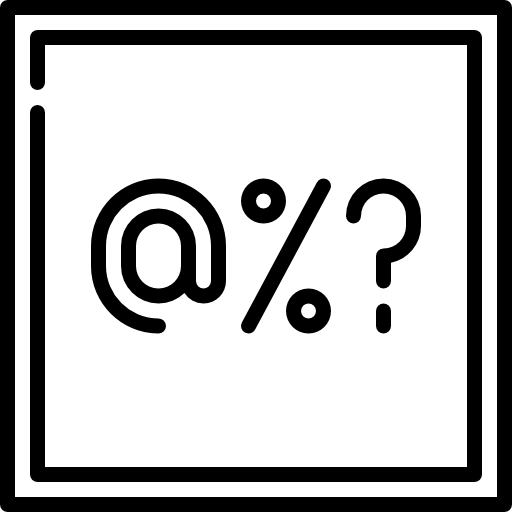

La inteligencia artificial es una rama de la informática que ha experimentado un crecimiento exponencial en las últimas décadas. Cada vez es más común encontrar sistemas que utilizan algoritmos de aprendizaje automático para tomar decisiones, procesar información y resolver problemas. Sin embargo, a pesar de las ventajas que ofrece, la IA también presenta una serie de problemas y retos que deben ser abordados si queremos evitar consecuencias negativas.
Uno de los principales problemas de la IA es su falta de transparencia. Muchos sistemas de IA utilizan algoritmos complejos que resultan difíciles de entender para los humanos. Esto puede llevar a situaciones en las que los sistemas tomen decisiones injustas o discriminativas sin que sepamos por qué.
Otro problema de la IA es la falta de ética. En algunos casos, los desarrolladores de sistemas de IA pueden estar más preocupados por conseguir resultados que por asegurarse de que sus sistemas sean éticos y respeten los derechos humanos. Esto puede llevar a situaciones en las que la IA se utiliza para fines cuestionables, como la vigilancia masiva o la manipulación de opiniones.
Además, la IA también puede tener problemas de seguridad. Algunos sistemas de IA son vulnerables a ataques informáticos que pueden poner en peligro la seguridad de los datos que manejan. Si estos sistemas se utilizan en entornos críticos, como la industria o la salud, las consecuencias pueden ser graves.
Por último, la IA también puede tener un impacto negativo en el empleo. Algunas tareas que antes eran realizadas por humanos ahora pueden ser automatizadas gracias a la IA, lo que puede llevar a la eliminación de puestos de trabajo. Aunque también hay quien defiende que la IA puede crear nuevos empleos, lo cierto es que es necesario abordar este problema para garantizar que la transición hacia una economía basada en la IA sea justa y equitativa.
En resumen, la IA es una tecnología muy prometedora que puede tener un impacto positivo en nuestra sociedad. Sin embargo, es necesario abordar sus problemas y retos para evitar consecuencias negativas y asegurarnos de que se utiliza de forma ética y responsable.
| Tipo de IA | Descripción | Imágenes |
|---|---|---|
| IA basada en reglas | Utiliza un conjunto de reglas predefinidas para tomar decisiones. Es una forma muy temprana de IA que sigue siendo utilizada en algunos sistemas. | |
| IA simbólica | Utiliza representaciones simbólicas para representar el conocimiento y resolver problemas. Es comúnmente utilizada en la programación lógica. |  |
| IA de aprendizaje automático | Utiliza algoritmos para aprender de los datos y mejorar su capacidad de tomar decisiones. Incluye técnicas como redes neuronales, árboles de decisión y clasificación. |  |
| IA de aprendizaje profundo | Una subcategoría del aprendizaje automático que utiliza redes neuronales profundas para procesar grandes cantidades de datos y aprender patrones complejos. Es utilizado en tareas como reconocimiento de imágenes, procesamiento del lenguaje natural y juegos. |  |
| IA evolutiva | Utiliza algoritmos genéticos y de evolución para generar soluciones a problemas. Es comúnmente utilizado en la optimización y el diseño automatizado. |  |
| IA basada en conocimiento | Utiliza una base de conocimientos para tomar decisiones y resolver problemas. Es comúnmente utilizado en sistemas de expertos y asistentes virtuales. |  |
| IA híbrida | Combina diferentes técnicas de IA para mejorar su capacidad de tomar decisiones y resolver problemas. Es comúnmente utilizado en aplicaciones empresariales y sistemas de control de procesos. |